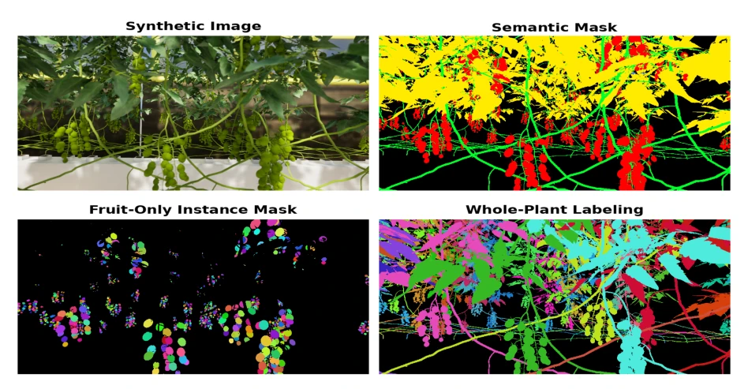
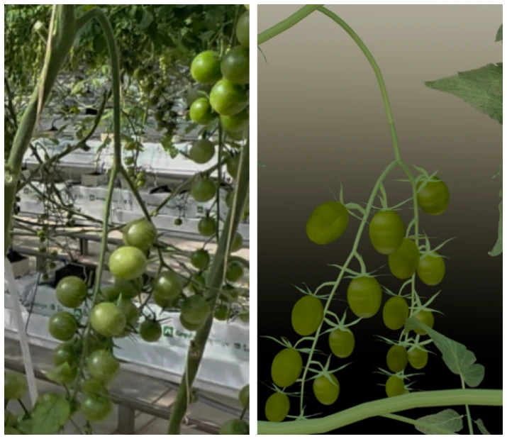
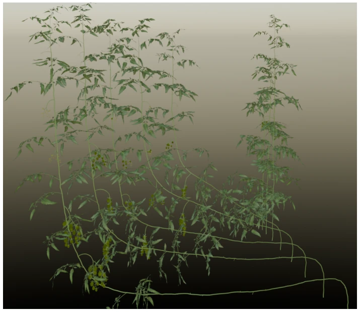
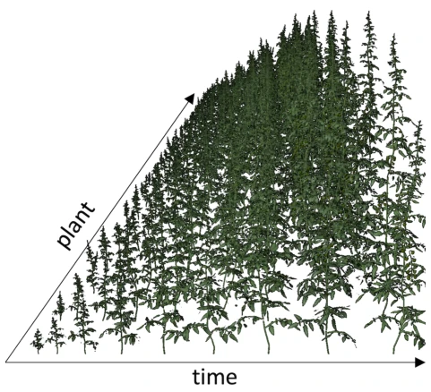
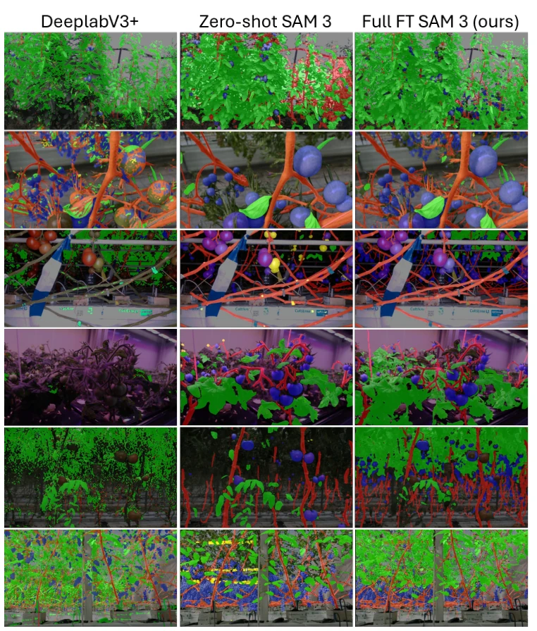
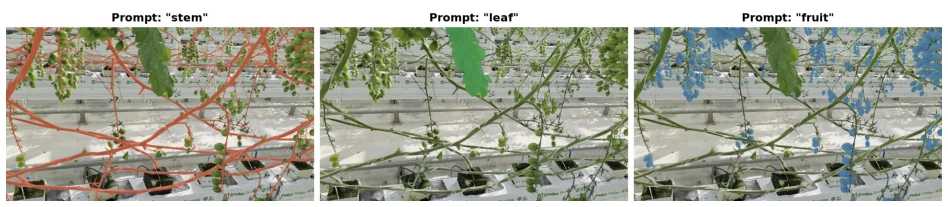

Text-conditioned Segmentation for Tomato Phenotyping via Procedural Synthetic Data
Samy Mounir, Mikolaj Cieslak, Najmeddine Dhieb, Hakim Ghazzai, Jonathan Klein, Katja Froehlich abspdf
论文点评Review
这篇论文试图用合成数据拯救农业视觉的“数据荒”，给 SAM 3 喂了点虚拟番茄，结果真香。亮点在于开源了全套东西，包括 Unreal 里的虚拟温室和 L-system 生成的植株，这对社区挺大方。但毒舌一下，所谓的“高保真”其实还是逃不过“合成 - 现实反转”的魔咒：在虚拟数据上表现最好的模型，到了真实温室反而不如微调过的 SAM 3。监督学习基线（如 DeepLabV3+）在合成集上刷分很猛，一上真实数据就崩，说明合成数据还是太“干净”了。不过，用权重插值（WiSE-FT）来平衡泛化性和领域适应性是个聪明的做法，至少比从头训练强。总之，这是个扎实的工程化方案，但离“通用农业视觉”还有距离。
This paper attempts to alleviate the "data famine" in agricultural vision using synthetic data, feeding SAM 3 some virtual tomatoes, yielding excellent results. The highlight lies in open-sourcing the entire suite, including the virtual greenhouse within Unreal and L-system generated plants, which is quite generous to the community. However, to be critical, the so-called "high fidelity" still cannot escape the curse of "synthetic-to-real reversal": the model performing best on virtual data actually performs worse than fine-tuned SAM 3 in the real greenhouse. Supervised learning baselines (such as DeepLabV3+) score very high on the synthetic set but collapse when applied to real data, indicating synthetic data is still too "clean". Nevertheless, using weight interpolation (WiSE-FT) to balance generalization and domain adaptation is a smart approach, at least superior to training from scratch. In conclusion, this is a solid engineering solution, but still distant from "general agricultural vision".
研究动机Motivation
番茄表型分析依赖人工，成本高且耗时 (Zhu et al. [2022])。虽然视觉基础模型（如 SAM 3）有零样本能力，但在复杂温室环境下性能下降 (Carion et al. [2025])。现有合成数据多基于静态资产，无法模拟生长动态或修剪等管理实践 (Cieslak et al. [2024])。这导致域偏移严重，且缺乏公开的高质量虚拟环境用于测试。此外，隐私问题限制了商业温室数据共享。作者旨在通过程序化生成模拟真实温室管理，结合 SAM 3 微调，解决数据稀缺和域适应问题，推动自动化监测。
Tomato phenotyping analysis relies on manual labor, is costly and time-consuming (Zhu et al. [2022]). Although visual foundation models (such as SAM 3) possess zero-shot capabilities, their performance degrades in complex greenhouse environments (Carion et al. [2025]). Existing synthetic data is mostly based on static assets, unable to simulate growth dynamics or management practices such as pruning (Cieslak et al. [2024]). This results in severe domain shift, and there is a lack of public high-quality virtual environments for testing. Additionally, privacy issues restrict commercial greenhouse data sharing. The authors aim to simulate real greenhouse management through procedural generation, combined with SAM 3 fine-tuning, to address data scarcity and domain adaptation issues, thereby promoting automated monitoring.
The overall process is divided into two stages: data generation and model fine-tuning. First, a virtual greenhouse is constructed in Unreal Engine 5, utilizing L-systems to procedurally generate cherry tomato plants, simulating branching patterns, growth stages, and management operations such as pruning and drooping, generating multi-view, lighting-varying RGB, depth, and pixel-level annotated data. Second, three fine-tuning strategies are proposed for SAM 3: Low-Rank Adaptation (LoRA) updates only attention layers; Full Fine-Tuning (Full FT) modifies all parameters; and Weight Interpolation (WiSE-FT) mixes pre-trained and fine-tuned weights, retaining zero-shot generalization capabilities. Additionally, weight interpolation experiments were conducted, balancing domain knowledge and general priors by adjusting the alpha coefficient. Finally, segmentation performance is evaluated on real datasets, retaining text-conditioned prompt capabilities, achieving virtual-to-real transfer.

Figure 1: Example of a synthetic image and its corresponding labels. Semantic masks are colored red for fruit, green for stems, yellow for leaflets, and blue for flowers. Instance masks are shown for individual fruits and whole plants.

Figure 4: Simulation of bifurcated infructescence: photograph (left) vs. model visualization (right).

Figure 5: Simulation of the leaning and lowering management practice.

Figure 6: Variation in plant morphology over time.
实验Experiments
在 TomatoMAP-Seg 等三个真实数据集及自建温室数据上评估。基线包括零样本 SAM 3、LoRA、全量微调及监督模型 (DeepLabV3+, SegFormer)。指标为果实 IoU 及无标签置信度。结果显示，全量微调 SAM 3 在宏观果实 IoU 上达 65.6%，显著优于零样本 (52.7%)。监督模型在真实数据上表现极差 (IoU<0.23)，证实合成数据泛化难。WiSE-FT 在部分数据集表现最佳。置信度分析表明微调模型覆盖更完整，幻觉更少。此外，还观察到合成 - 现实反转现象，即合成集表现最好的模型未必在真实集最优，强调了真实评估的重要性。
Evaluated on three real datasets including TomatoMAP-Seg and self-built greenhouse data. Baselines include zero-shot SAM 3, LoRA, full fine-tuning, and supervised models (DeepLabV3+, SegFormer). Metrics include fruit IoU and unlabeled confidence. Results show that full fine-tuning SAM 3 achieves 65.6% on overall fruit IoU, significantly outperforming zero-shot (52.7%). Supervised models perform extremely poorly on real data (IoU<0.23), confirming the difficulty of generalizing from synthetic data. WiSE-FT performs best on certain datasets. Confidence analysis indicates fine-tuned models have more complete coverage and fewer hallucinations. Additionally, the synthetic-to-real reversal phenomenon was observed, where the model performing best on the synthetic set is not necessarily optimal on the real set, emphasizing the importance of real-world evaluation.

Figure 2: Qualitative comparison of the supervised model DeepLabV3+, zero-shot SAM3, and our fully fine-tuned SAM3 (Full FT SAM3) across six datasets: AgRobTomato, LaboroTomato, Rob2Pheno, Tomato Plantfactory, Toma- toOD, and our real greenhouse dataset. The prediction panels show semantic segmentation outputs for leaves (green), stems (red), flowers (yellow), and fruits (blue) overlaid on the original RGB images.

Figure 3: Prompt simplicity analysis. A single image is segmented using concise organ-level prompts: “stem”, “leaf” and “fruit”. The fine-tuned SAM 3 model cleanly isolates the respective anatomical structures without ambiguity, demonstrating strong alignment with basic taxonomic vocabulary.